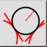
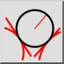
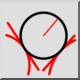
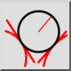

2 tangentes y radio
Barra de herramienta / icono:
 

Menú: Dibujar > Círculo > 2 tangentes y radio
Acceso directo: C, T, R
Comandos: circletangent2radius | ctr
Esta es una traducción automática.
Barra de herramienta / icono:
 

Menú: Dibujar > Círculo > 2 tangentes y radio
Acceso directo: C, T, R
Comandos: circletangent2radius | ctr
Dibuja un círculo con un radio dado que es tangencial a dos entidades.